프로필
생방송
최근 활동
지난 활동
케미
통계
달력
현수막
음악
좋아요
관련 링크
사용 가이드
가이드
구성원 정보를 불러오는 중...
방송 정보를 가져오는 중...
이벤트 불러오는 중...
멤버
모두 해제
종류
모두 해제
채팅
생방송
게시글
카페
유튜브
통계 불러오는 중...
케미 데이터 불러오는 중...
달력 불러오는 중...
현수막 데이터 불러오는 중...
좋아요 요청 불러오는 중...
디스코그래피 불러오는 중...
명예의 전당 불러오는 중...